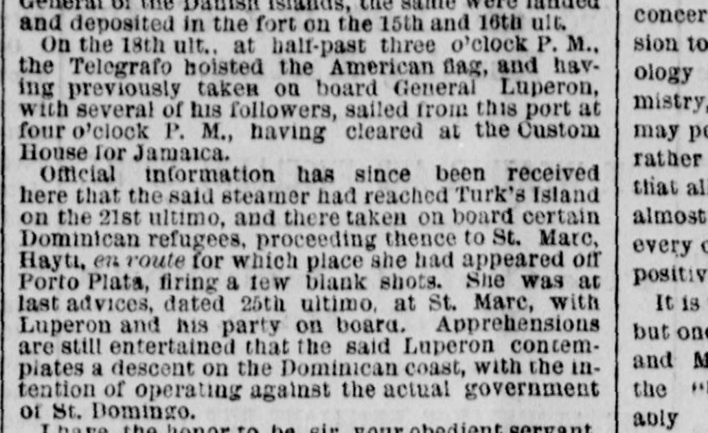
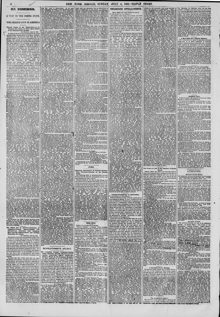

Official information has since been received here that the said steamerInformación oficial se ha recibido desde entonces aquí de que el mencionado vapor
The New York Herald. New York [N.Y.], July 4, 1869. Page 4. View the originalVer el original


See the full pageVer la página completaA steamer that had taken aboard General Luperon and several followers sailed after clearing for Jamaica, reached Turk's Island on the 21st and took on Dominican refugees, then appeared off Porto Plata firing a few blank shots and was at St. Marc on the 26th with Luperon aboard. Apprehensions were entertained that Luperon contemplated a descent on the Dominican coast against the government of Santo Domingo, and the Baez government issued a decree detailing the operations of the armed steamer Telegrafo commanded by Luperon.Un vapor que había embarcado al general Luperón y a varios seguidores zarpó tras obtener salida para Jamaica, llegó a las islas Turcas el 21 y embarcó refugiados dominicanos, luego apareció frente a Puerto Plata disparando algunos tiros de salva y estaba en Saint-Marc el 26 con Luperón a bordo. Se temía que Luperón contemplara un desembarco en la costa dominicana contra el gobierno de Santo Domingo, y el gobierno de Báez emitió un decreto detallando las operaciones del vapor armado Telégrafo comandado por Luperón.
FULL TEXT:TEXTO COMPLETO:
REVOLUTIONISTS AFLOAT.REVOLUCIONARIOS A FLOTE.
The Crusading Steamer Telegrafo—Sailing Under American, Spanish, Haytien and Venezuelan Colors—Her Official Status—Declared a Pirate by the Dominican Republic.El vapor cruzado Telegrafo—Navegando bajo los pabellones estadounidense, español, haitiano y venezolano—Su estado oficial—Declarado pirata por la República Dominicana.
We gave yesterday in our St. Domingo correspondence a full account of the attack of the crusading steamer Telegrafo upon the settlement at Samaná, with a narrative of the detention by the crusader of the American steamer Hero, of New York, and of an unknown schooner during the action. It seems the Telegrafo had been purchased by some of the partisans of Cabral, who are exiles from the Dominican republic, and cleared from St. Thomas under the United States flag, with a sea letter from the American Consul. During her cruise she successively hoisted the Spanish and Haytien flags, and at the attack on Puerto Plata flew the Venezuelan ensign. In the fight at Samaná bay it is not stated that she used any colors. The following official documents proclaim her status and designs:—Dimos ayer en nuestra correspondencia de Santo Domingo una relación completa del ataque del vapor cruzado Telegrafo contra el poblado de Samaná, con una narración de la detención por el cruzador del vapor estadounidense Hero, de Nueva York, y de una goleta desconocida durante la acción. Parece que el Telegrafo había sido comprado por algunos de los partidarios de Cabral, que son exiliados de la república dominicana, y despachado desde Santo Tomás bajo la bandera de los Estados Unidos, con una carta de mar del Cónsul estadounidense. Durante su crucero enarboló sucesivamente las banderas española y haitiana, y en el ataque a Puerto Plata desplegó el pabellón venezolano. En la lucha en la bahía de Samaná no se afirma que usara pabellón alguno. Los siguientes documentos oficiales proclaman su estado y sus designios:—
ST. THOMAS, March 16, 1869.SANTO TOMÁS, 16 de marzo de 1869.
Hon. J. W. FABENS, Envoy of the Dominican Republic to the United States of America, St. Thomas:—Honorable J. W. FABENS, Enviado de la República Dominicana ante los Estados Unidos de América, Santo Tomás:—
SIR—In reply to your note of yesterday, asking information relative to the movements of the steamer Telegrafo, which sailed recently from this port under the American flag, I have to certify that the said steamer, when under the Haytien flag, had been detained here on the 10th February last at my request, made to the local Governor, in consequence of information having reached me to the effect that General Luperon, a Dominican exile, with an armed expedition, contemplated embarking on her to instigate a rebellion against the government of the Dominican republic. The Governor having required of the consignee a declaration under oath and guarantee that no armed force or arms or munitions of war should be landed at any part of the coast of St. Domingo, which declaration the consignee having declined to make, had ordered a search of the vessel to be made, when arms and munitions were found; and after my repeated requests and ultimate protests made to the Governor General of the Danish islands, the same were landed and deposited in the fort on the 15th and 16th ult.SEÑOR—En respuesta a su nota de ayer, pidiendo información relativa a los movimientos del vapor Telegrafo, que zarpó recientemente de este puerto bajo la bandera estadounidense, tengo que certificar que dicho vapor, cuando estaba bajo la bandera haitiana, había sido detenido aquí el 10 de febrero pasado a solicitud mía, hecha al Gobernador local, a consecuencia de haber llegado a mi conocimiento información en el sentido de que el general Luperón, un exiliado dominicano, con una expedición armada, contemplaba embarcarse en él para instigar una rebelión contra el gobierno de la república dominicana. Habiendo el Gobernador requerido del consignatario una declaración bajo juramento y garantía de que no se desembarcaría fuerza armada ni armas ni municiones de guerra en ninguna parte de la costa de Santo Domingo, declaración que el consignatario se negó a hacer, había ordenado que se hiciera un registro del buque, en el cual se encontraron armas y municiones; y después de mis repetidas solicitudes y últimas protestas hechas al Gobernador General de las islas danesas, las mismas fueron desembarcadas y depositadas en el fuerte los días 15 y 16 del pasado.
On the 18th ult., at half-past three o'clock P. M., the Telegrafo hoisted the American flag, and having previously taken on board General Luperon, with several of his followers, sailed from this port at four o'clock P. M., having cleared at the Custom House for Jamaica.El 18 del pasado, a las tres y media de la tarde, el Telegrafo enarboló la bandera estadounidense, y habiendo tomado previamente a bordo al general Luperón, con varios de sus seguidores, zarpó de este puerto a las cuatro de la tarde, habiendo sido despachado en la Aduana para Jamaica.
Official information has since been received here that the said steamer had reached Turk's Island on the 21st ultimo, and there taken on board certain Dominican refugees, proceeding thence to St. Marc, Hayti, en route for which place she had appeared off Porto Plata, firing a few blank shots. She was at last advices, dated 25th ultimo, at St. Marc, with Luperon and his party on board. Apprehensions are still entertained that the said Luperon contemplates a descent on the Dominican coast, with the intention of operating against the actual government of St. Domingo.Desde entonces se ha recibido aquí información oficial de que dicho vapor había llegado a la isla Turks el 21 del pasado, y allí tomado a bordo a ciertos refugiados dominicanos, dirigiéndose desde allí a St. Marc, Haití, en cuya ruta había aparecido frente a Puerto Plata, disparando algunas salvas en blanco. A las últimas noticias, fechadas el 25 del pasado, estaba en St. Marc, con Luperón y su comitiva a bordo. Todavía se abrigan aprensiones de que dicho Luperón contempla un descenso sobre la costa dominicana, con la intención de operar contra el actual gobierno de Santo Domingo.
I have the honor to be, sir, your obedient servant,Tengo el honor de ser, señor, su obediente servidor,
H. VICTORIA.H. VICTORIA.
The Baez government, fully advised of Luperon's movements, have issued a decree, accompanied by an official detail of the piratical operations of the craft, and of which the following is a translation:—El gobierno de Báez, plenamente informado de los movimientos de Luperón, ha emitido un decreto, acompañado de un detalle oficial de las operaciones piráticas de la embarcación, y del cual lo siguiente es una traducción:—
[Official.][Oficial.]
SENATORIAL COUNCIL OF THE DOMINICAN REPUBLIC—ORDINARY LEGISLATIVE SESSION.CONSEJO SENATORIAL DE LA REPÚBLICA DOMINICANA—SESIÓN LEGISLATIVA ORDINARIA.
Inasmuch as the executive power, through the organ of the Citizen Minister of the Interior, has presented to this high body divers authenticated documents concerning the exile Gregorio Luperon, accompanied by other rebels like himself, now infesting the coast of the Dominican republic on board an armed steamer, from whose top flies the national ensign;Por cuanto el poder ejecutivo, por órgano del Ciudadano Ministro del Interior, ha presentado a este alto cuerpo diversos documentos autenticados concernientes al exiliado Gregorio Luperón, acompañado de otros rebeldes como él, que ahora infestan la costa de la república dominicana a bordo de un vapor armado, desde cuyo tope vuela el pabellón nacional;
Whereas the steamer Telegrafo (Telegraph), which is commanded by the rebel Gregorio Luperon, hoisted successively in the harbor of St. Thomas the national colors of Spain and Hayti, which fact was registered by the local authorities at the instance of the Dominican Consul, and information thereof sent to the fort of the said island, which contains the armament, and her sailing was delayed for lack of papers confirming her claimed nationality;Considerando que el vapor Telegrafo (Telegraph), que es comandado por el rebelde Gregorio Luperón, enarboló sucesivamente en el puerto de Santo Tomás los colores nacionales de España y Haití, hecho que fue registrado por las autoridades locales a instancia del Cónsul dominicano, y se envió información del mismo al fuerte de dicha isla, que contiene el armamento, y su salida fue demorada por falta de papeles que confirmaran su pretendida nacionalidad;
Whereas by means of misrepresentation she obtained from the United States Consul in St. Thomas a sea letter for the said steamer, upon which she hoisted the flag of the Union and departed immediately from the above port, directing her course to Puerto Plata, where she communicated with the shore and secured a discharge for the coast, with the same colors, retiring then to St. Marc, an insurrectionary point in the Haytien republic, where she remained no little time;Considerando que por medio de falsa representación obtuvo del Cónsul de los Estados Unidos en Santo Tomás una carta de mar para dicho vapor, sobre la cual enarboló la bandera de la Unión y partió inmediatamente del puerto antedicho, dirigiendo su rumbo a Puerto Plata, donde se comunicó con la costa y se aseguró un despacho para la costa, con los mismos colores, retirándose entonces a St. Marc, un punto insurreccional en la república haitiana, donde permaneció no poco tiempo;
Whereas that on the 1st day of June she appeared in front of Puerto Plata, hoisting the Venezuelan flag, under the protection of which and with a signal of distress she asked a pilot, which was granted, according to custom;Considerando que el día 1 de junio apareció frente a Puerto Plata, enarbolando la bandera venezolana, bajo cuya protección y con una señal de auxilio pidió un práctico, que le fue concedido, según costumbre;
Whereas that she received the pilot and took him prisoner and used the vessel of the port to send a demand to surrender—an ultimatum of unusual arrogance—alarming the place by the resolution threats to open fire, which threats were subsequently put into execution under the Dominican flag;Considerando que recibió al práctico y lo tomó prisionero y usó la embarcación del puerto para enviar una intimación de rendición—un ultimátum de inusitada arrogancia—alarmando al lugar con las resueltas amenazas de abrir fuego, amenazas que fueron posteriormente puestas en ejecución bajo la bandera dominicana;
Whereas that on the 8th day of the same month she was vigorously repulsed by the loyal population and authorities of the place, made a dash upon Samaná, impudently opened fire, effected a landing and performed acts of vandalism, and having been repulsed unanimously by the heroic population;Considerando que el día 8 del mismo mes fue vigorosamente rechazado por la leal población y las autoridades del lugar, se lanzó sobre Samaná, abrió fuego impúdicamente, efectuó un desembarco y realizó actos de vandalismo, y habiendo sido rechazado unánimemente por la heroica población;
Whereas that when an armed vessel traverses the seas without a register and documents of nationality, or sails without recognized belligerent rights, only accredited as such under the supreme jurisdiction and authority of the nation to which it is supposed to belong, and shall be competent to certify its nationality;Considerando que cuando una embarcación armada atraviesa los mares sin registro ni documentos de nacionalidad, o navega sin derechos de beligerancia reconocidos, solo está acreditada como tal bajo la jurisdicción suprema y la autoridad de la nación a la que se supone que pertenece, y será competente para certificar su nacionalidad;
Whereas that if these vessels of war legally armed can use foreign flags as signals it is not permitted to declare a flag false, nor under cover of these to perform acts of infidelity and felony, in which case it is made a very grave insult to the nation whose nationality she usurps;Considerando que si estos buques de guerra legalmente armados pueden usar banderas extranjeras como señales, no les es permitido declarar falsa una bandera, ni bajo la cobertura de estas realizar actos de infidelidad y felonía, en cuyo caso se hace un insulto muy grave a la nación cuya nacionalidad usurpa;
Whereas, lastly, that the clandestine character of the sailing of the vessel above alluded to, its successive nationalities, the acts of savage vandalism committed by her crew, her visit to the coasts and demanding the surrender of the port, and using for her purposes a foreign flag whose incursions as traitors and depredators all prove evidently that she is a pirate and should be treated as such; in consideration of the above principles of constitutional law we urgently decree:—Considerando, por último, que el carácter clandestino de la salida de la embarcación aludida, sus sucesivas nacionalidades, los actos de salvaje vandalismo cometidos por su tripulación, su visita a las costas y su exigencia de la rendición del puerto, y el uso para sus fines de una bandera extranjera, cuyas incursiones como traidores y depredadores todo prueba evidentemente que es una pirata y debe ser tratada como tal; en consideración de los principios de derecho constitucional antes expuestos, decretamos urgentemente:—
ARTICLE 1. The steamer Telegraph, its chief, Gregorio Luperon, and the people who accompany him are declared pirates.ARTÍCULO 1. El vapor Telegraph, su jefe, Gregorio Luperón, y las personas que lo acompañan son declarados piratas.
ART. 2. All vessels of war are fully authorized to give chase and pursue her and to act with respect to her chief, troops and crew according to the invariable and universal international law.ART. 2. Todos los buques de guerra están plenamente autorizados para darle caza y perseguirla y para actuar con respecto a su jefe, tropas y tripulación según el invariable y universal derecho internacional.
ART. 3. This decree will be sent to the executive authority for its promulgation and constitutional enforcement.ART. 3. Este decreto será enviado a la autoridad ejecutiva para su promulgación y cumplimiento constitucional.
Given in the chamber of the Senate Council of St. Domingo on the 18th day of June, in the year 1869, in the twenty-sixth year of the independence, sixth year of the restoration and second year of the regeneration.Dado en la sala del Consejo Senatorial de Santo Domingo el día 18 de junio, en el año 1869, en el vigésimo sexto año de la independencia, sexto año de la restauración y segundo año de la regeneración.
By the President of the Senate.Por el Presidente del Senado.
JACINTO DE LA CONCHO.JACINTO DE LA CONCHO.
GERARDO BOBADILLA, Secretary.GERARDO BOBADILLA, Secretario.
Executed, published and circulated in the territories of the republic for its punctual observance.Ejecutado, publicado y circulado en los territorios de la república para su puntual observancia.
Given in St. Domingo the 19th day of June, 1869, twenty-sixth year of the independence, sixth of the restoration, second of the regeneration.Dado en Santo Domingo el día 19 de junio de 1869, vigésimo sexto año de la independencia, sexto de la restauración, segundo de la regeneración.
BUENAVENTURA BAEZ.BUENAVENTURA BÁEZ.
Countersigned—JOSE HUNGRIA, Minister of War and Marine; M. MA. GAUTIER, Minister of Foreign Affairs.Refrendado—JOSE HUNGRIA, Ministro de Guerra y Marina; M. MA. GAUTIER, Ministro de Relaciones Exteriores.